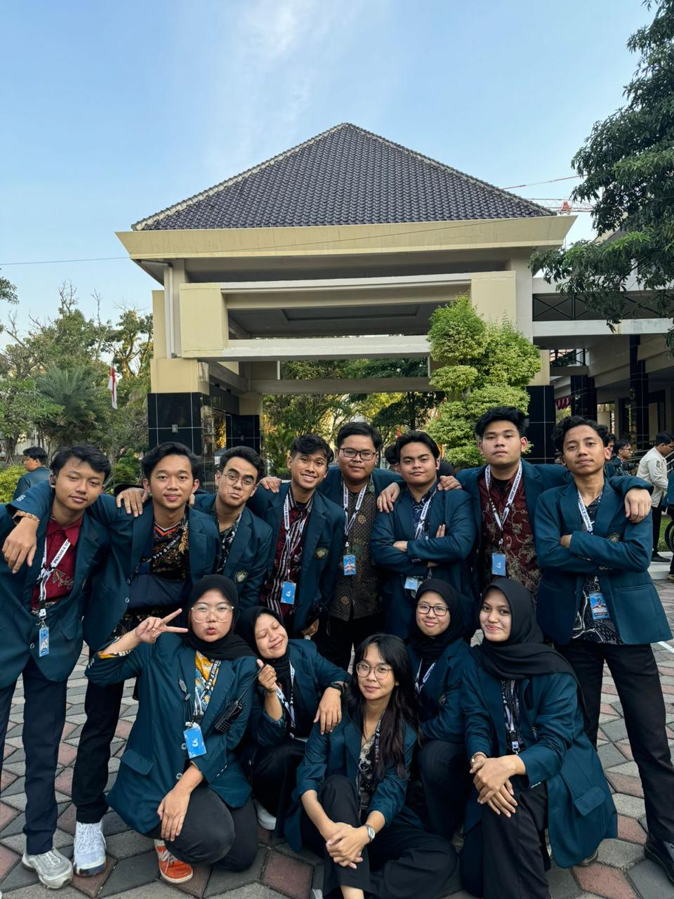
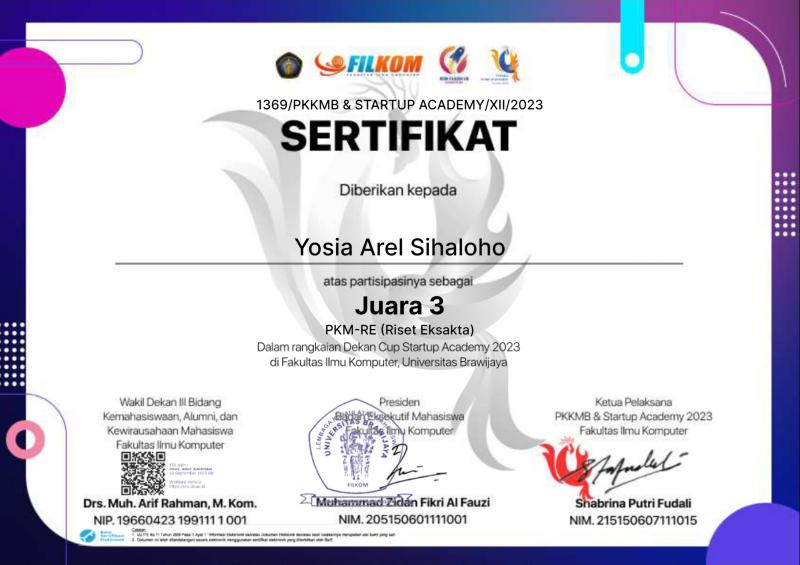

Tentang saya
Nama saya Yosia Arel Sihaloho, lahir pada 6 Oktober 2005 di Jakarta. Saat ini, saya sedang menempuh studi di Universitas Brawijaya (UB) di Jawa Timur,
tepatnya di Fakultas Ilmu Komputer dengan program studi Teknik Informatika. Saya diterima di UB pada tahun 2023 melalui jalur SNBT (Seleksi Nasional Berdasarkan Tes),
dan saat ini saya sangat antusias untuk menjalani perjalanan akademik ini dengan segala peluang dan tantangannya.
Di luar kegiatan akademik, saya memiliki beberapa hobi yang saya nikmati. Saya suka menonton film, terutama dengan genre sci-fi,
seperti Star Wars yang menjadi salah satu favorit saya. Selain itu, saya juga gemar membaca buku untuk memperluas
wawasan dan menambah pengetahuan. Tidak ketinggalan, saya juga seorang gamer yang sangat menyukai game dengan tipe soul game,
seperti Elden Ring, yang memberikan tantangan dan pengalaman bermain yang mendalam.
Riwayat Saya
Selama perjalanan akademik saya, saya berpartisipasi dalam kepanitiaan dan meraih prestasi yang menjadi bagian penting
dalam pengembangan diri. Pengalaman ini tidak hanya mengasah kemampuan organisasi dan kepemimpinan saya, tetapi juga memperluas jaringan dan wawasan.
PKKMB 2024 - Panitia Divisi Acara

PKKMB (Pengenalan Kehidupan Kampus bagi Mahasiswa Baru) FILKOM UB 2024 merupakan program orientasi yang dirancang untuk membantu mahasiswa baru Fakultas Ilmu Komputer
Universitas Brawijaya beradaptasi dengan kehidupan kampus. Program ini mencakup berbagai kegiatan untuk mengenalkan struktur organisasi
fakultas, budaya kampus, serta keterampilan yang dibutuhkan dalam dunia akademik dan sosial. Selain itu, PKKMB juga memberikan kesempatan bagi mahasiswa baru
untuk membangun jaringan dan persahabatan yang akan mendukung perjalanan akademik mereka.
Sebagai panitia divisi acara dalam PKKMB FILKOM UB 2024, saya bertanggung jawab untuk merancang dan mengatur berbagai kegiatan
yang mendukung kelancaran acara. Tugas ini mencakup koordinasi dengan berbagai pihak untuk memastikan bahwa setiap acara berlangsung
sesuai rencana, mulai dari sesi ice breaking hingga talkshow dengan pemateri yang relevan. Pengalaman ini memberikan saya kesempatan
untuk mengembangkan keterampilan organisasi, kepemimpinan, dan komunikasi yang sangat berharga.
Juara 3 PKM RE Dekan Cup FILKOM UB

Saya berhasil meraih Juara 3 dalam kompetisi PKM RE (Riset Eksakta) Dekan Cup FILKOM UB, dengan mengangkat tema "Penerapan Piezolektrik di
Lampu Merah sebagai Energi Terbarukan". Dalam penelitian ini, saya fokus pada pemanfaatan teknologi piezoelektrik untuk mengubah energi
mekanik dari getaran kendaraan yang berhenti di lampu merah menjadi energi listrik. Energi tersebut dapat digunakan untuk menyuplai
kebutuhan listrik di sekitar area lampu merah, sehingga memberikan kontribusi positif terhadap keberlanjutan energi terbarukan.